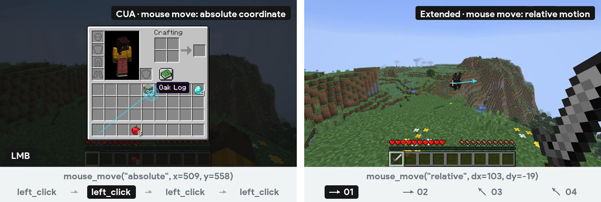
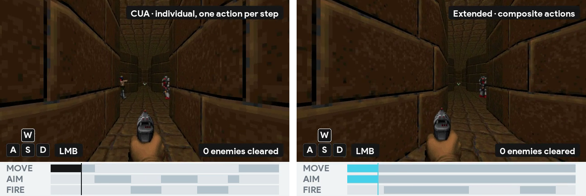
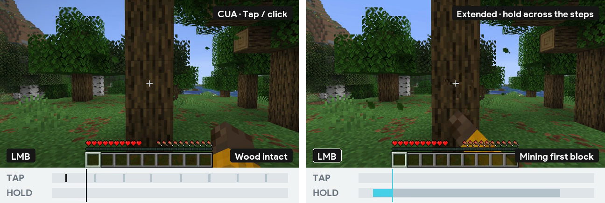
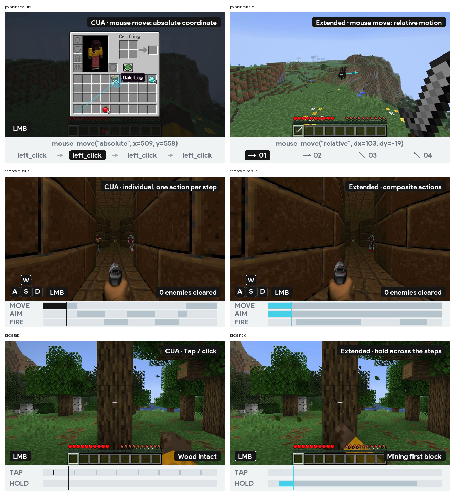

Player-1 控制演示修改记录
2026-10-13 · 原有连续录制画面，统一动作字号、横条留白和第三例的两侧裁剪窗口。网页已重新生成。Python 编译、Ruff、构建及浏览器检查通过；两侧视频时长均为 8.3 秒，浏览器错误日志为空。
1 · 鼠标动作
具体鼠标调用使用统一的 20 px 字号。绝对坐标取自录制时的归一化落点；相对值按每个动作的累计位移取近似整数。四个点击／方向阶段保留同步高亮。
复查：通过。

2 · 组合动作
MOVE / AIM / FIRE 的字体与鼠标动作一致。横条统一使用源视频的 x=112–616 区间，标签之后留出至少 39 px 间距。
复查：通过。

3 · 点击和按住
TAP / HOLD 与横条分开。两段视频都截取原片 0.533–8.833 秒，长 8.3 秒、249 帧；前后的等待各约减半。鼠标输入、挖完木头的状态和时间指针按同一窗口重新对齐。
复查：通过。

统一标签颜色
六段演示中的黑底标签、高亮文字与高亮方向箭头均使用白色。按住的键与鼠标按钮使用白色边框。图片从当前编码视频的 1.2 秒位置提取。

手机复查
390 CSS px 下，两侧演示与动作文字完整显示，页面无横向溢出。截图显示实际播放状态，前后对照中的视频帧可能不同。